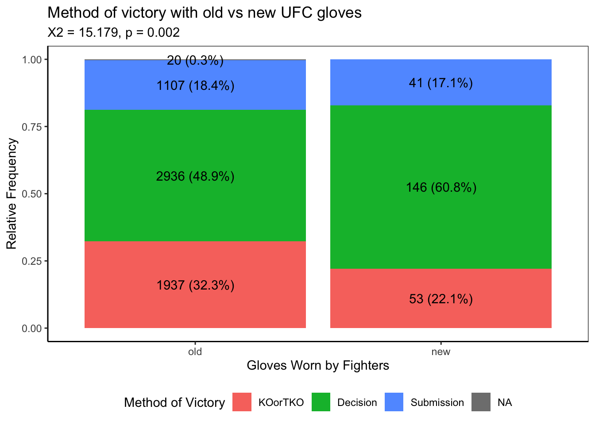

Mixed Martial Arts (MMA) is a combat sport that combines striking and grappling techniques from a variety of combart sports, such as boxing, wrestling, sambo, Brazillian jiu-jitsu, etc. Today, the Ultimate Fighting Championship (UFC) is MMA’s largest promotion by far, with many using the terms “MMA” and “UFC” interchangably. As a huge fan of the sport myself, I have decided to address a recent debate in the MMA community.
The New UFC Fight Gloves
Important
Are the new UFC fight gloves causing fewer knock outs?
Fight outcomes:
U/S/M-DEC = win by unanimous, split, or majority decision
SUB = win by submission
KO/TKO = win by knock out or technical knock out
DQ = Disqualification
Overturned = win overturned
On June 1, 2024, the UFC debuted their new official fight gloves at UFC 302 (UFC 2024).
The new official UFC fight gloves
Among the new glove’s features was improved foaming meant to reduce head trauma (UFC 2024). As a result, some fans have speculated that there are now fewer fights ending in knock outs (KO) and technical knock outs (TKO). To address these fans’ concerns, this analysis is meant to be a casual investigation into the frequency of KO/TKO’s since the implementation of the new gloves.
Note
This analysis uses this ufc dataset (shortlikeafox 2024). The data includes fight outcomes and fighter stats from 2010 (when the UFC started consistently tracking most of these stats) to as of this analysis (most recent card was on November 2, 2024). You can find more information on this data including a data dictionary on kaggle (mdabbert 2024).
ufc_data <-read.csv("ufc-master.csv") %>%# Filter out fights with no finish data (238/6478 rows)filter(Finish !="") %>%# Conver, recode, or create variables that I might use latermutate(# Convert Date from text to DateDate =ymd(Date),# yearyear =year(Date),# year + monthy_m =floor_date(Date, "month"),# year + 4 month period (data not nicely divisible by 3 months/quarters),y_4m =floor_date(Date, months(4)),# Collapse method of victoryMoV =fct_collapse(Finish,Decision =c("U-DEC","M-DEC","S-DEC"),Submission =c("SUB"),KOorTKO =c("KO/TKO"),other_level =NA ),# Add a variable indicating which gloves were usedgloves =case_when(Date >=as.Date("2024-06-01") ~"new", T ~"old"),# Add a lgl variable indicating if the fight ended in a ko or tkokotko = Finish =="KO/TKO",# Gender neutral weight class as factor ordered by weightweight_class =factor(str_remove(WeightClass, "Women's "), levels =c(paste0(c("Straw","Fly","Bantam","Feather","Light","Welter","Middle","Light Heavy","Heavy"),"weight"),"Catch Weight")) )
Write functions.
Code
# Make any functions that I might use later# Make function to bin fight dates by grouping events into bins of approximately k fights# Note: can't just bin every k fights because then fights from different events will be in different binsbin_k <-function(ufc_data, k){ ufc_data %>%count(Date) %>%mutate(cum_fights =cumsum(n), bin_fights =ceiling(cum_fights/k)) %>%group_by(bin_fights) %>%mutate(bin_upper =max(Date)) %>%ungroup() %>%distinct(Date, bin_upper)}# Make a function to count pct occurance of a variable level by grouppct_by_group <-function(df_group_var, success = T, col_names){colnames(df_group_var) <-c("group", "var") df <- df_group_var %>%count(group, var) %>%full_join(df_group_var %>%expand(group, var)) %>%mutate(n =replace_na(n, 0)) %>%group_by(group) %>%summarize(pct = n[var == success]/sum(n)*100)colnames(df) <- col_namesreturn(df)}# Make a function to convert American Moneyline betting odds into implied winning probabilitiesmoneyline_to_prob <-function(moneyline){if (is.na(moneyline)) NAelseif (moneyline <100) moneyline/(moneyline -100) # if betting favorite, moneyline is negativeelse100/(moneyline+100) # if betting underdog, moneyline is positive}
Analysis
Are KO/TKO’s less frequent since June 1, 2024 (debut of new UFC fight gloves)?
chi.res <-chisq.test(table(ufc_data$MoV,ufc_data$gloves)) sub_lab <-paste0("X2 = ",round(chi.res$statistic,3), ", p = ", round(chi.res$p.value,3))ufc_data %>%ggplot(aes(x =factor(gloves, levels =c("old","new")), fill = MoV))+geom_bar(position =position_fill(reverse = T), orientation ="x")+geom_text(stat ="count", position =position_fill(reverse = T, vjust =0.5), aes(label =after_stat(paste0(count," (",round(count *100/tapply(count, x, sum)[x],1), "%)"))))+xlab("Gloves Worn by Fighters")+ylab("Relative Frequency")+labs(title ="Method of victory with old vs new UFC gloves",subtitle = sub_lab, fill ="Method of Victory")+theme(legend.position ="bottom")

Figure 1: Method of victory distribution for fights using the old UFC gloves vs new UFC gloves.
If we just looked at the distribution of method of victory for fights pre and post new gloves, we see relatively more decisions and fewer KO/TKO’s (Figure 1). However, only 20 cards have occured since the new gloves were introduced, and the frequency of KO/TKO’s can vary wildly by card (Figure 2). Additionally, we can’t conclude from these data that the decrease is due to the new gloves rather than some other factor.
pct_kotko <-pct_by_group(ufc_data[,c("Date","kotko")], col_names =c("Date", "pct_kotko"))pct_kotko %>%mutate(gloves =case_when(Date >=as.Date("2024-06-01") ~"new", T ~"old")) %>%ggplot(aes(x = pct_kotko))+geom_histogram(aes(fill = gloves), bins =15, show.legend = F)+facet_wrap(~gloves)+xlab("Percent of fights ending in a KO/TKO")+ylab("Count")+labs(title ="Distribution of the % frequency of KO/TKO's on a UFC card",subtitle ="Data from Mar 2010 - Nov 2024")
Figure 2: Distribution of the percent of fights on a card ending in KO/TKO.
Is the decrease in KO/TKO frequency correlated with the introduction of the new gloves?
Looking at the data for UFC cards from 2010-2024, KO/TKO frequency hovers around an average of ~31.9% (sd = 13.9) (Figure 3). While KO/TKO frequency has been decreasing recently, the decrease doesn’t appear to be correlated with the introduction of the new gloves (June 1, 2024) or outside the normal range of variation.
Code
pct_ave <-mean(pct_kotko$pct_kotko)pct_sd <-sd(pct_kotko$pct_kotko)pct_kotko %>%ggplot(aes(x = Date, y = pct_kotko))+geom_line(alpha =0.2)+geom_smooth(method = stats::loess, se = F, method.args =list(degree =0, span =0.03))+geom_vline(xintercept =ymd("2024-06-01"), color ="red", lty =2)+geom_hline(yintercept = pct_ave)+scale_x_date(date_breaks ="1 year",date_labels ="%Y")+xlab("Card date")+ylab("Percent of fights ending in a KO/TKO")+labs(title ="Percent of fights on a UFC card ending in a ko/tko over time",subtitle ="New gloves implemented (red line); 2010-2024 average (black line)")
Figure 3: Percent of fights on a card ending in a knock out or technical knockout over time.
Note
An important factor to consider is that some fighter’s are more likely to get a KO/TKO than others. For example, fighters may have a more striking vs grappling heavy style, strikers may prefer “head hunting” to volume striking, and “knock out power” can also vary greatly by individual and weight class. As a result, we might expect some cards to have fewer KO/TKOs anyway based on the styles of the fighters on the card. To try to account for this, we can approximate how many KO/TKO’s we would expect per fight card given how frequently the winners’ historically have won by KO/TKO.
Code
p_kotko <- ufc_data %>%mutate(# Proportion of red wins by ko/tkop_red_kotko = (RedWinsByKO + RedWinsByTKODoctorStoppage)/RedWins,# Proportion of blue wins by ko/tkop_blue_kotko = (BlueWinsByKO + BlueWinsByTKODoctorStoppage)/BlueWins,# Fight expected kotko based on winnerp_kotko =case_when(Winner =="Red"~ p_red_kotko, Winner =="Blue"~ p_blue_kotko) ) %>%# Filter out fights where p_kotko is NAfilter(!is.na(p_kotko)) %>%# Summarize by cardgroup_by(Date) %>%summarize(# Number of fights during this periodn =n(),# Observed proportion of ko/tko'sobs_kotko =sum(kotko)/n,# Expected proportion of ko/tko'sexp_kotko =sum(p_kotko)/n ) %>%mutate(# Difference between observed and expecteddelta_kotko = (obs_kotko - exp_kotko))
This method for calculating “expected” KO/TKO frequency is likely sufficient considering that the average difference between observed and expected from 2010-2024 was essentially 0 (mean = -0.01, sd =0.19). Looking the difference between observed and expected KO/TKO frequencies over time, we see a similar downward trend starting in late 2023 that doesn’t seem particularly abnormal.
Code
p_ave <-mean(p_kotko$delta_kotko)p_sd <-sd(p_kotko$delta_kotko)p_kotko %>%ggplot(aes(x = Date, y = delta_kotko))+geom_line(alpha =0.2)+geom_smooth(method = stats::loess, se = F, method.args =list(degree =0, span =0.03))+geom_vline(xintercept =ymd("2024-06-01"), color ="red", lty =2)+geom_hline(yintercept = p_ave)+scale_x_date(date_breaks ="1 year",date_labels ="%Y")+xlab("Card date")+ylab("observed - expected KO/TKO frequency")+labs(title ="Difference between observed and expected ko/tko frequency",subtitle ="New gloves implemented June 1, 2024 (red line); 2010-2024 average (black line)")
Figure 4: Difference between observed and expected ko/tko frequency per card over time.
Conclusions
While the hypothesis that the new UFC gloves are causing fewer KO/TKOs has gained traction in UFC/MMA forums, it may be more attributable to fans’ recency bias than fact. Yes, KO/TKOs have been less frequent since the gloves were introduced. However, the variation in recent KO/TKO frequency isn’t abnormal given historical fluctuations. It is possible that we will continue to see a decline in KO/TKOs going forward, but for now, we can’t conclude that the new gloves have caused any change in KO/TKO frequency.